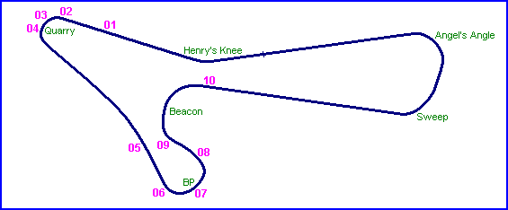
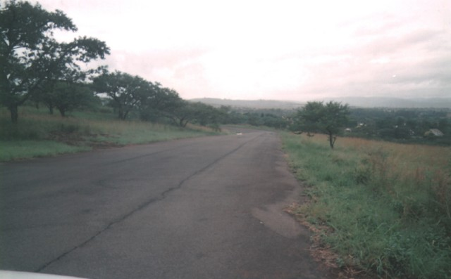
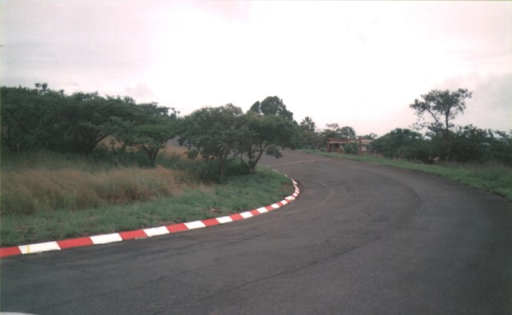
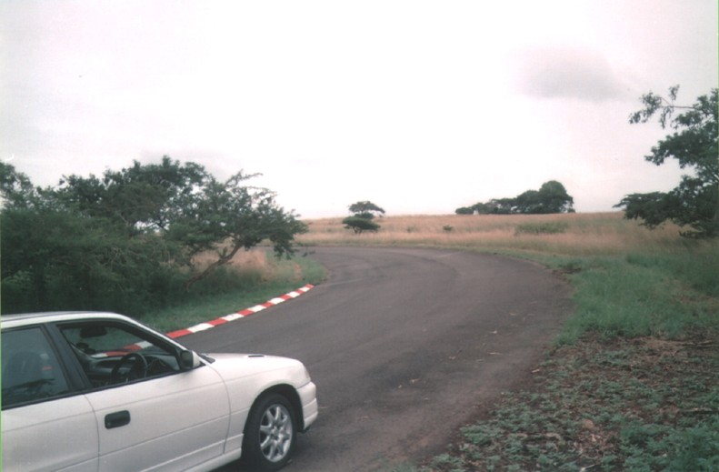
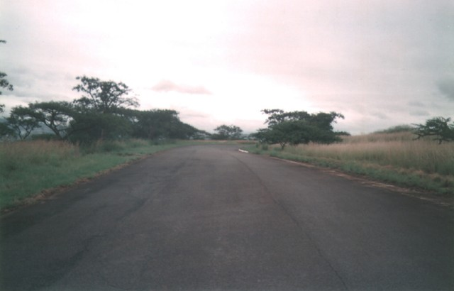
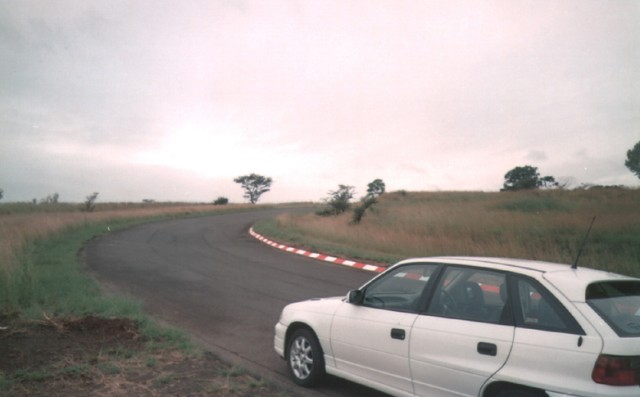
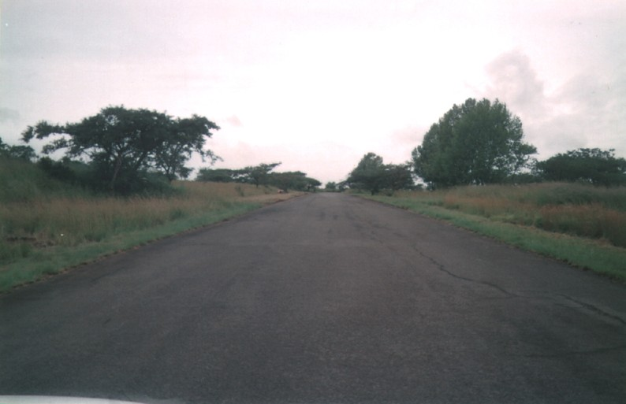

Roy Hesketh Circuit, Pietermaritzburg - BP and Beacon
|| Contents | Quarry | BP and Beacon || Home ||
Click on the hyperlinks above to view photographs of that
section.
The numbers and arrows on the map represent the location of where each of the
photographs were taken.

Return to racingcircuits.net's Photo
Archive Main Index

05 - Maritzburg straight with BP corner ahead.

06 - BP entry.

07 - BP corner.

08 - Exit of BP, heading into Beacon.

09 - Beacon entry.

10 - Top of Beacon.
Photographs ©Paul Minnaar. Reproduced here with kind permission